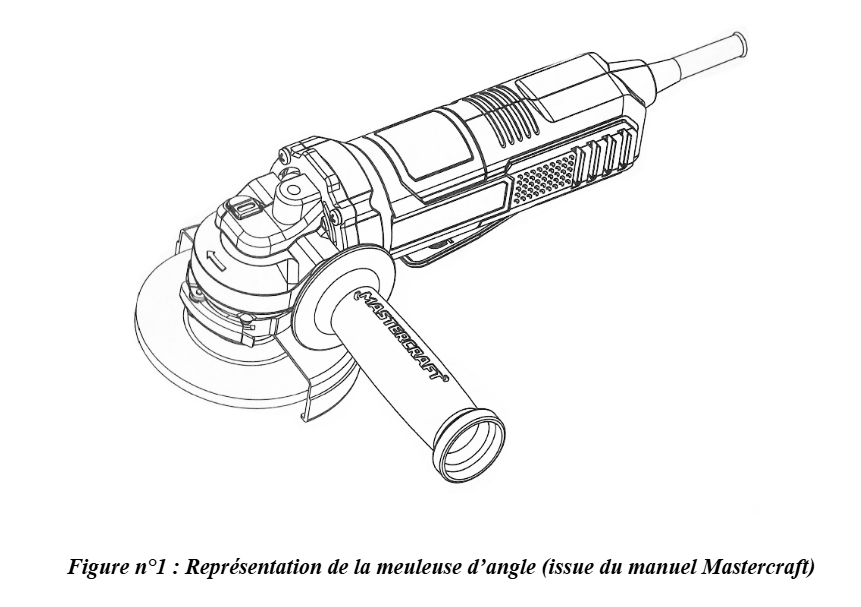
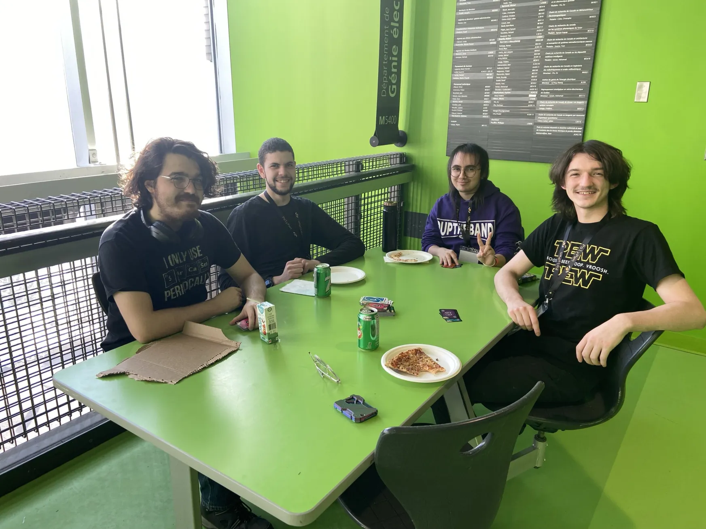

Profil
Je suis un étudiant en génie de la production automatisée à l'ÉTS, curieux, créatif et toujours prêt à relever de nouveaux défis. Mon objectif est de m'améliorer en tant que futur ingénieur, je pourrais combiner mon sens logique et ma passion pour agencer mon catalogue d'outils. Je suis bilingue (français et anglais) et j'ai des notions d'espagnol.
Contacts
- Email : olivier.boudreau.2@ens.etsmtl.ca
- GitHub : github.com/KoraFey
- LinkedIn : linkedin.com/in/olivier-boudreau-65a60430b
Compétences Techniques
🖥️ Programming
- Java, C#, C++, Grafcet
- JavaScript, Ladder, jQuery
- HTML5, CSS3, PHP, SQL
- Arduino, RSLogix5000
🧰 Tools
- Git, VirtualBox, phpMyAdmin
- Visual Paradigm, OracleSQL
🧑💻 IDEs
- Visual Studio, VS Code
- IntelliJ, Android Studio
- Arduino IDE, Eclipse
Other Categories
- CAO: Solid Edge
- Suite Google and Microsoft
- Routage: Wireshark
- MaintainX
Formation
-
ÉTS – École de technologie supérieure
Baccalauréat en production automatisée
2023 – présent -
Cégep Lionel-Groulx
DEC en Sciences de la nature
2020 – 2022 -
Certifications
Permi de conduite classe 5 (2023)
Expérience Professionnelle
-
Stagiaire en génie de la production automatisée –
Les Moulins de Soulanges - Démontage, diagnostic et réparation de machinerie agricole (tracteurs), incluant l’identification des défaillances mécaniques
- Élaboration de listes de pièces techniques à remplacer et gestion des commandes auprès de fabricants et fournisseurs spécialisés
- Coordination avec les fournisseurs pour assurer la disponibilité et la conformité des pièces requises
- Participation au remontage et à la remise en service des équipements réparés
- Inspection et remise à niveau d’installations existantes (réseaux de tuyauterie), incluant la prise de mesures et la mise aux normes
- Remplacement de solutions temporaires par des installations durables et conformes aux standards industriels
- Recherche et sélection de composants techniques en comparant les fournisseurs locaux selon le coût, la disponibilité et la compatibilité
- Contribution à l’optimisation des installations en proposant des solutions pratiques et économiques
Septembre 2025 – Décembre 2025 (4 mois)
Expérience
-
Gardien de parc – Ville de Rosemère
Surveillance des parcs (Hamilton, Charbonneau et centre de loisirs)
2022 – 2024 -
Plongeur - Asian Fusion cuisine
Kanda Sushi (Rosemère)
2021 – 2024
Projets
- Grinder Builder – Conception complète d’une meuleuse, incluant l’analyse des besoins, la modélisation du procédé de fabrication et la sélection des composantes.
- Usinage d'une petite voiture – Avec l'aide d'une perceuse et d'une fraiseuse, nous avons créé un véhicule en aluminium, produit un patron de conception, entretenus l'équipement et tout en appliquant la sécurité au travail.
- Bras robotique articulé – Nous avons poussé nos connaissances en robotique à multiples joints à l’aide d’un kit Arduino, des pièces imprimées 3D et des servo moteurs.
- Projet Installation Outils – J'ai conduit l'installation de stations d’outils au travers d’une usine, séparé par type d’utilisation et code de couleur.
- Exosquelette de main (test initiaux) – Fabrication d’une main articulée en bois actionnée par câble, chaque doigt tirait un fil qui pliait la plus grande main que tu tenais par un manche.
- Voiture téléguidé – Fabrication, avec des pièces imprimées avec notre BambooLab, pour la construction et programmation d'une voiture téléguidée.
Featured Projects


Voiture téléguidée
Design, conception et fabrication !
Langues
- Français : langue maternelle
- Anglais : bilingue (parlé et écrit)
- Espagnol : notions de base